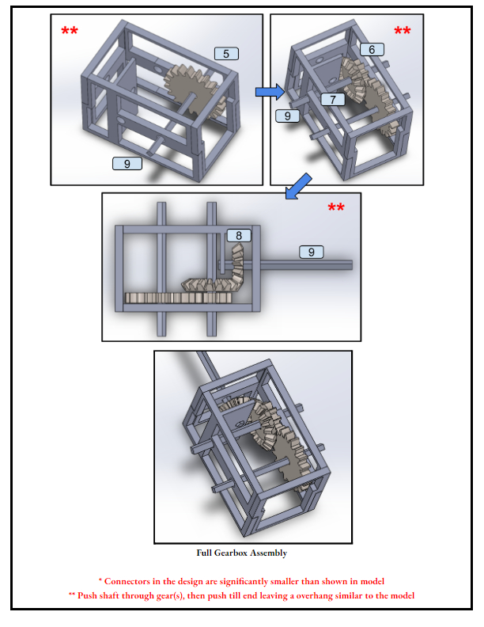

APS112 Stimulus Response-Conditioning Project
This is the final project presented on a stimulus-response conditioning device for the purposes of bedsore relief in a 6-year old non-ambulatory patient. This is the 2nd design project class in the mechanical engineering curriculum at the University of Toronto, and as such the focus of the report and presentation is to apply the engineering design process to a predefined problem posed by real-world clients.
Final Presentation Slides Final ReportMIE243 CNC Machine Project
This is the final project in MIE243: Mechanical Engineering Design, detailing the design of a desktop CNC machine. This is the first design project involving the use of SolidWorks CAD in the MIE curriculum. This project includes a full appendix of engineering drawings detailing the design.
Final Report
This is an interm project in MIE243: Mechanical Engineering Design, which involved the
design, construction and testing of a small gearbox in SolidWorks, printed using the 3D
Dremal printing system.

This is the final project in MIE221: Manufacturing Engineering, detailing the conceptual design of
an automatic wheel-caster assembly system.
This is the final project in MIE301: Kinematics and Dynamics of Machines. A conceptual design for a planar delta
mechanism is proposed, followed by a full kinematic and dynamic analysis using MIE301 course concepts such as
vectors loops, dynamic force analysis, forward/inverse kinematics etc. with a MATLAB implementation.
MIE243 Gearbox Assembly Project

MIE221 Wheel Caster Automatic Assembly System
MIE301 Planar Delta Mechanism Project
Academic Disclaimer
NONE OF THESE PROJECTS MAY BE REPRODUCED IN WHOLE OR IN PART FOR WORK SUBMITTED FOR ACADEMIC CREDIT
AT THE UNIVERSITY OF TORONTO OR OTHER INSTITUTIONS.